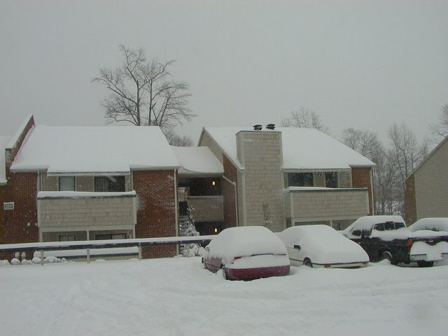
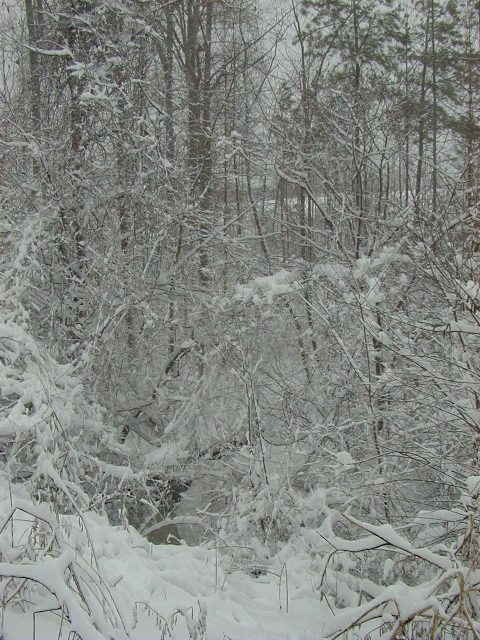
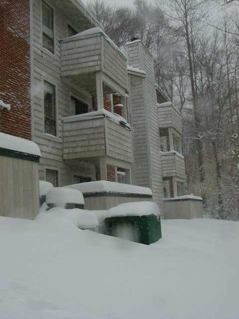
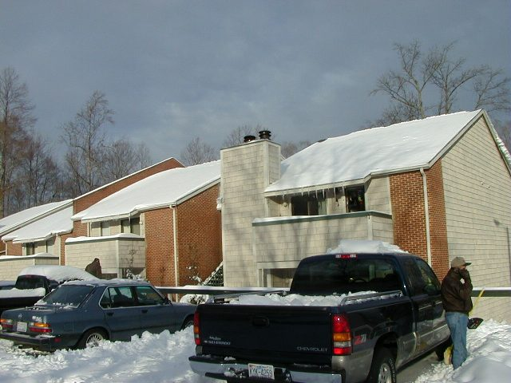

Pictures of the great snowstorm of '00 in Raleigh NC

Here's my apartment building. It's still snowing. The white car is my 1987 Acura Integra. The truck is one of the few vehicles which would later that day make it out of the parking lot (there is a steep hill to climb to exit the parking lot).

Here's the creek behind my apartment, you can just barely make out the creek.

Here's a shot of the back of the building. My apartment is on the 3rd floor, just out of the picture to the left (you can see the 1st floor patio wall).

And here's the building from the parking lot again in the afternoon.
Comments to ffilz@mindspring.com
© Copyright 2000 Frank Filz. All Rights Reserved.
Page last updated February 3, 2000